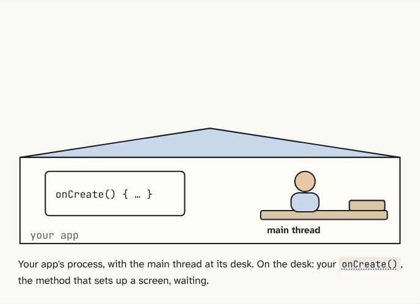

Free course · 6 puzzles so far · about 45 minutes
Android from the foundation
Lifecycle, process death, ANRs, Context leaks: most of Android's hard parts come from one idea. This course builds that idea up one small puzzle at a time, with diagrams you click through, until the rest stops being a list of rules and starts making sense.

How it works
Each puzzle starts with a problem Android had to solve, then gives you one building block, a picture to remember it by, and a diagram that plays itself (or step through it yourself). It ends with three questions: answer them all correctly to unlock the next puzzle, so no gap carries forward. Code names with a dotted underline open the real Android or Linux source: hover or tap them.
Modules
Module 1: How your app really runs
Processes, the runtime, Zygote, system_server, Binder and the main thread: the four characters every later puzzle uses.
- Start here: The one idea behind everything Your app doesn't control its own life. Another process decides, and tells your app by sending messages to its main thread.
- An app is a Linux process with its own user Each app gets its own Linux user ID and its own process. The kernel keeps them apart, so one app can't open another's files or read its memory.
- ART is what runs your code Your Kotlin ships as DEX bytecode. ART, inside each app's process, reads it line by line, compiles hot code while it runs, and the system compiles more of it ahead of time later.
- Zygote is why apps start fast One process, started at boot, preloads ART and the framework. Every app is forked from it and shares its memory until it writes.
- system_server is the town hall One long-running process holds Android's system services. It keeps the register of every app's screens and decides their lifecycle, not your app.
- Binder is the post office between processes Processes can't touch each other's memory, so every call between them is packed into bytes and carried by the kernel's Binder driver, stamped with the caller's identity.
- The main thread is one clerk with one queue All UI and lifecycle code runs on one thread that takes messages from a queue, one at a time. A slow message blocks everything behind it.
Module 2: Screens and their lives (coming next)
Context, Intents, PendingIntent, the Activity lifecycle, tasks and the back stack, process death and saved state.
Module 3: Work without a screen (coming next)
Services, broadcasts, ContentProviders and startup order, Doze and WorkManager, permissions.
Module 4: Threads, coroutines and Flow (coming next)
What really runs where, cancellation and errors, cold and hot streams.
Module 5: Pixels and performance (coming next)
How a frame gets on screen, Compose internals, memory and leaks, startup and jank.